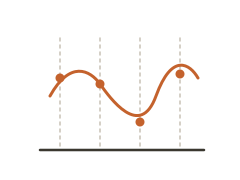
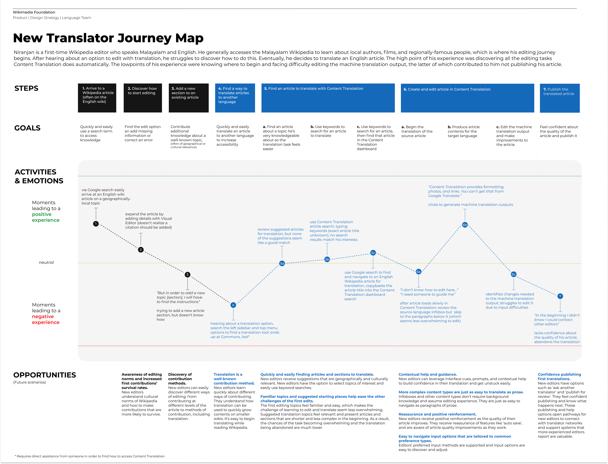
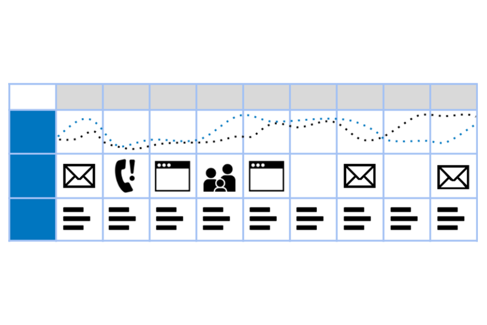
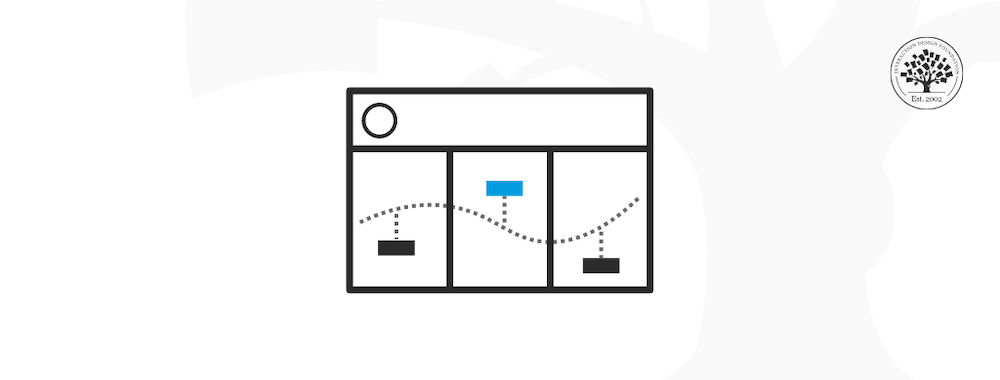
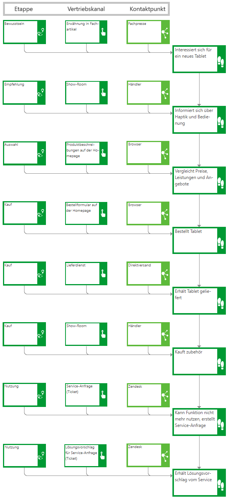

User journey map
About
A user journey map is a visual narrative of a specific user's experience with a product or service over time. It is structured as a horizontal timeline divided into stages, with horizontal swim lanes showing actions, thoughts, emotions, touchpoints, and pain points at each stage. The emotion curve — a line tracking emotional highs and lows across the journey — is its most distinctive feature: it makes the affective arc of the experience visible at a glance, communicating not just what happens but how it feels. Journey maps are built from research: ideally from interviews, contextual inquiry, or diary studies with real users in the mapped scenario.
When to use
Use a user journey map when you need to communicate the full arc of a user experience to a team or stakeholders, identify moments that require intervention, or align cross-functional teams around a shared understanding of the current state. It is most valuable as a current-state artifact before redesign, and as a future-state blueprint after.
When not to use
Do not create a journey map from assumptions — an assumption map embeds bias and misleads design decisions. Avoid mapping an overly broad scope in a single map; a journey map of "the entire customer lifecycle" is rarely actionable. Narrow the scope to a specific scenario and a specific user type.
References
Examples
Click any example to view full size and visit the original source.




